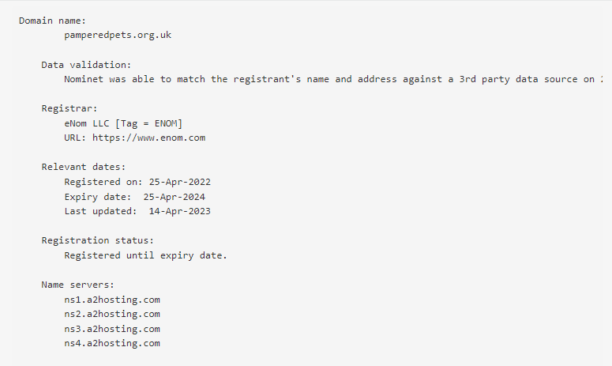
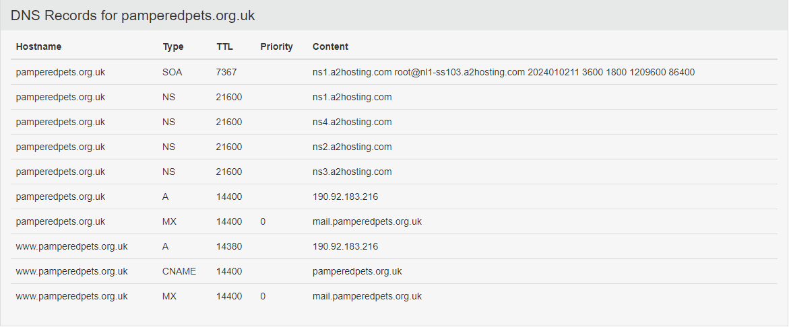

Week 3
Vulnerability Audit and Assessment - Baseline Analysis and Plan
This week I spent time creating a baseline analysis and vulnerability assessment proposition for a website. I enjoyed this task for providing the opportunity practise the presentation of information. I think it's valuable to direct attention towards presentation, and communicating details in as simple a way as possible. So, for my baseline analysis and vulnerability assessment proposition, I consciously added organisational features such as a cover page, contents and footnotes to practise converting knowledge into business-orientable artifacts.
My baseline analysis and plan are available here.
TCP/IP Technical Overview
I also spent time reading Parziale et al's 2006 webbook: TCP/IP Tutorial and Technical Overview. The book talks about the history and the various layers of the TCP/IP protocol stack, covering a range of protocols and technologies at each layer. I found this book to be very difficult to digest in one reading as it includes many protocol header structures that would require dedicated time to memorise. I would like to try and implement network protocols, at a pace of one layer per week, to help consolidate the information in this book, as a low level recollection of network protocols is fundamental to network security and engineering professions. I think having a weekly microproject is an excellent way to learn alongside our careers, so this is on my to do list once my course has finished. For now, I'm happy to be spending time on organisational skills and network diagnostic tools, that serve a direct, practical purpose for myself, but I do wish the course included more time for this part of network security.
Network Diagnostics
As part of the course, this week I traced network packets to the website that I proposed a vulnerability audit and assessment for and peformed a WHOIS search for it to identify information such as the registered contact, the mx record, the hosting platform and the main nameservers. The results of this alongside further network diagnostics will be presented in week 6 as part of the vulnerability audit and asssessment.
 